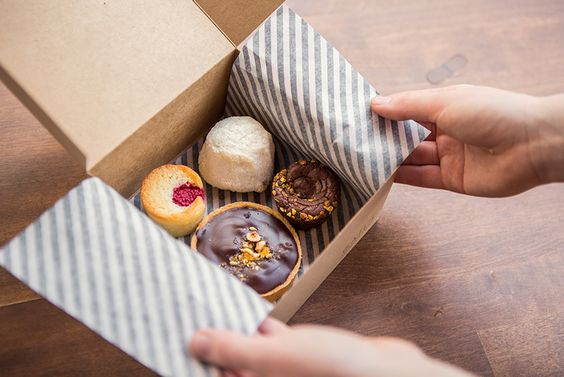

ALL OUR CAKES AND PASTRIES
ARE FREE FROM
SYNTHETIC
FLAVOURS & COLOURS

SUSTAINABLE PACKING
With an initative to save our environment, we server all
our food in non-single use plastic packing.
We only use paper lids and straws.
Doing so has helped us to save tonnes of plastic till now.
| SOURCING | PROCESSING | STORAGE | CAFE |
| Tracing main
ingredients like egg,cocoa,and sugar. |
Most vendors are
certified with ISO 22000 or BRC. |
Ensuring all
temperature sensitive food ingredients are transported within limits. |
Daily check on critical
parameter including:
|
| Sugarcane grown in
Uttar Pradesh trough are transported for our products. |
Internationally accepted
norm followed for supplier selection. |
Monitoring temperature
during logistic in data logger. |
Suprise cafe audit
once in a quarter by national auditors. |
| Cocoa beans is
bought from Andra Pradesh. |
Valid systems are
planted, audited by national auditors. |
NSF restaurant audit
are conducted to ensure maintainance of standrads set by BAKEFUEL. |
xyz road, Anand, Gujarat |
0987654321,1234567890 |
bakefuel@gmail.com |
|
| Company | Services | Products | trust&taste | Contacts |